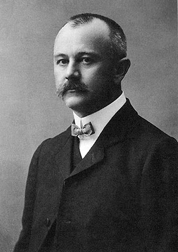

Jovan Cvijić (Loznica, 11. oktobar 1865 — Beograd, 16. januar 1927) bio je srpski naučnik, osnivač Srpskog geografskog društva, predsednik Srpske kraljevske akademije profesor i rektor Beogradskog univerziteta, počasni doktor Univerziteta Sorbone i Karlovog univerziteta u Pragu. Od osnivanja Beogradskog univerziteta 12. oktobra 1905, postao je jedan od osam prvih redovnih profesora na Univerzitetu.
Cvijić je počeo da se bavi naukom još kao student Velike škole i tada je nastao njegov rad Prilog geografskoj terminologiji našoj, a nastavio kao srednjoškolski profesor i bečki student proučavajući kraške pojave u istočnoj Srbiji, Istri i Jadranskom primorju. Na osnovu tih proučavanja napisao je više radova kao i svoju doktorsku disertaciju. Čitav život posvetio je proučavanju Srbije i Balkanskog poluostrva putujući skoro svake godine po Balkanu. Tokom života, odnosno za preko trideset godina intenzivnog naučnog rada, objavio je par stotina naučnih radova. Jedno od najvažnijih dela je „Balkansko poluostrvo“.
Bavio se podjednako društvenom i fizičkom geografijom, geomorfologijom, etnografijom, geologijom, antropologijom i istorijom. Smatra se utemeljivačem srpske geografije.
|  | |
| Datum rođenja | 11. octobar 1865 |
| Mesto rođenja | Loznica |
| Datum smrti | 16. januar 1927. (61 god.) |
| Mesto smrti | Beograd |
| Polje | Geografija Geomorfologija Etnografija |
| Škola | Univerzitet u Beogradu Univerzitet u Beču |
| Potpis | |